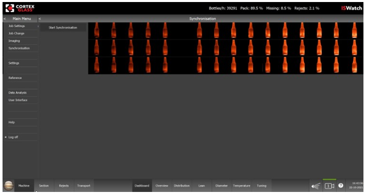
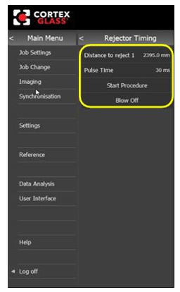
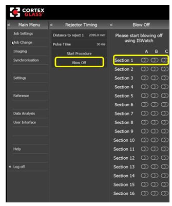

Start-Main Menu
CTX-OP-021D
Revised: 2023-05-22
Purpose/Application
Defines the procedures for navigating and using the start-main menu.
PPE Required
Bump cap, safety glasses, hearing protection, long sleeves, safety-toed shoes, gloves. Where applicable, wear appropriate and serviceable Fire Retardant / Flame Resistant clothing (FR).
Safety Hazards
Safety Controls
Review the Emergency Action Plan before performing work.
Equipment Needed
Access to the ISWatch HMI / operator screen
Comments
- Read a section thoroughly before starting the work. Personnel performing these tasks must have completed the required training.
- For additional information, refer to:
- CTX-ET-021 Troubleshooting the ISWatch System
- CTX-MR-021 ISWatch Maintenance
- CTX-SU-021 ISWatch Job Change and Job Setup
- CTX-SU-022 Setting the ISWatch Alarms and Rejects
- Vendor manual in the Resources library
Start / Main Menu
The Start / Main Menu is opened by pressing the Jupiter planet in the lower left of the screen. The number of sub-menus available on the left side of the screen varies depending on the logon level.
Sub-Menus

|
Menu / Action |
Description |
Refer to: |
|
Job Settings |
Current job settings are shown and can be changed. |
CTX-IS-021 ISWatch - Job Change and Job Setup |
|
Job Change |
Used when a new job is started on the forming machine. |
CTX-IS-021 ISWatch - Job Change and Job Setup |
|
Imaging |
Section 4 below |
|
|
Synchronization |
Section 5 below |
|
|
Settings |
Used to set Limits, Alarms, and Rejects |
Screen = Settings-Limits (range) Alarm- on/off |
|
Reference |
??? |
??? |
|
Data Analysis |
Displays 3 data analysis screens: General, Temperature, Rejects. (Sometimes referred to as the Data History screen.) |
Any graph or measurement recorded and charted can be reviewed. |
|
Or - Machine |
Various system settings can be changed or set. |
|
|
User Interface |
Sets the Timeframe for the trend graphs. |
CTX-IS-022 Setting the ISWatch Alarms and Rejects |
|
Log On / Log Off |
User access to log in and log off |
Section 1 above |
Start/Main Menu➔ Imaging Screen

Camera Setup
Separation
- By default, camera images are automatically separated into images of the bottle (Automatic Separation activated).
- When halve bottle images are shown on the screen the automatic separation does not work correctly, the separation should be done manually.
- Deselect Automatic Separation.
- Press Show Graphs to get an intensity curves over one machine cycle.
- Set the Limit for each camera, the limit is shown in the graph with a red line.
Start/Main Menu ➔Synchronization Screen
- Press Start Synchronization in order to start the process.
- Make sure at least 80% of the bottles are on the conveyor belt during synchronization.
- When all the bottle images are displayed in the correct sections, synchronization is
completed.
In the image below, the bottle intensity is going from low to high, and the synchronization is correct.
Note:If the synchronization is not correct, check the conveyor order in the Job Settings menu.

Start/Main Menu➔ Section Menu➔ Article Top/Bottom Screen

Start/Main Menu ➔Section Menu ➔Rejects Rejector Timing Screen
- Press Distance to Reject (Rejector), and enter the distance between the main camera viewpoint on the conveyor and the rejector. Normally this value is only set during the installation of the system and does not need to be changed.
- Press Pulse Time, and enter the pulse time in milliseconds (the time the reject valve is activated).
- Press Blow Off, and select one of the sections to reject.
- If the reject pulse is too early, increase the Distance to Reject value. If the pulse is too late, decrease the value.
- Repeat these steps until the rejector functions correctly.

- Press Pulse Time, and enter the pulse time (the time the reject valve is activated).
- Press Start Procedure.
- Press Synchronization and select one section.
- Start rejecting bottles of this section with the forming machine reject (and ONLY one section). The ISWatch measures the distance during 5 rejects.
- Press Blow Off, and select one of the cavities/sections to reject.
- If the reject pulse is too early, increase the Distance to Reject value. If the pulse is too late, decrease the value.
- Repeat steps 5 and 6 until the reject system functions correctly.

Start/Main Menu ➔Machine Screen
Use the Machine menu to restart the computer, or shut down the ISWatch program.
- Use Reset Learning to reset all internal software algorithms. Use this in case the system behaves abnormally.
- Press Events to view system events, such as when an operator is logged on, etc.

Start/Main Menu➔ User Interface Screen

Show equal images: This option displays the bottle images in the overview with equal intensities.
Clean Touchscreen: This feature disables the touchscreen for a short period in order to clean it.
Timeframe - Graphs: Change the time period for the graphs in the Section Screens.
Alarm Indicators: Enable (Use selected) the Alarm Indicators to display them on the Dashboard and Overview screens as dots located below the cavity and filled regions in the bottles.
- If the Alarm is selected, whenever an alarm is generated (for glass distribution etc.) or an inclusion is detected, an internal counter will be increased.
- If the counter is equal or higher than the Number (in the screen below, 1) in the Timeframe set (60s in the screen below), the indicator will be shown.
- For the Source Reject it works the same.
Red Rectangle: Enable (Use selected) the Red Rectangle to display them on the Dashboard and Overview screen as a rectangle around the cavity
- If the Alarm is selected, whenever an alarm is generated (for glass distribution etc.) or an inclusion is detected, an internal counter will be increased.
- If the counter is equal or higher than the Number (in the screen below, 1) in the Timeframe set (60s in the screen below), the indicator will be shown.
- For the Source Reject it works the same.
- Worst Cavities is the number of maximum rectangles shown.

Alarm Lamp: Enabling (Use selected) the Alarm Lamp will turn the 24VDC Lamp output on IO-module on when the Red Rectangle is shown on the screen.
Disable With Rejector: Enabling this will disable the alarm Lamp when the Rejects are turned off.
Approval
|
Person |
Role |
|---|---|
|
Person |
Role |
|
Paul Mohr |
Squad Lead, Forming Research and Development (R&D) |
|
Andrew Kandik |
Lead Forming Specialist II |
|
Phillip Wilson |
EHS Continuous Improvement Manager |
Revision History
| 2023-05-22 |
Approved by Paul Mohr, Squad Lead, Forming Research and Development (R&D) Original Issue |